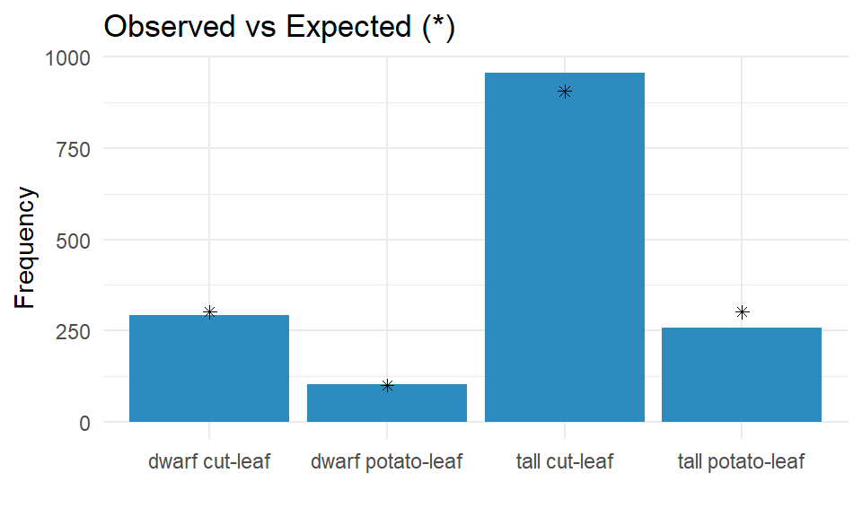

Chapter 2 Probability
You can label chapter and section titles using {#label} after them, e.g., we can reference Chapter ??. If you do not manually label them, there will be automatic labels anyway, e.g., Chapter ??.
Figures and tables with captions will be placed in figure and table environments, respectively.

Figure 2.1: Here is a nice figure!
Reference a figure by its code chunk label with the fig: prefix, e.g., see Figure 2.1. Similarly, you can reference tables generated from knitr::kable(), e.g., see Table 2.1.
| Sepal.Length | Sepal.Width | Petal.Length | Petal.Width | Species |
|---|---|---|---|---|
| 5.1 | 3.5 | 1.4 | 0.2 | setosa |
| 4.9 | 3.0 | 1.4 | 0.2 | setosa |
| 4.7 | 3.2 | 1.3 | 0.2 | setosa |
| 4.6 | 3.1 | 1.5 | 0.2 | setosa |
| 5.0 | 3.6 | 1.4 | 0.2 | setosa |
| 5.4 | 3.9 | 1.7 | 0.4 | setosa |
| 4.6 | 3.4 | 1.4 | 0.3 | setosa |
| 5.0 | 3.4 | 1.5 | 0.2 | setosa |
| 4.4 | 2.9 | 1.4 | 0.2 | setosa |
| 4.9 | 3.1 | 1.5 | 0.1 | setosa |
| 5.4 | 3.7 | 1.5 | 0.2 | setosa |
| 4.8 | 3.4 | 1.6 | 0.2 | setosa |
| 4.8 | 3.0 | 1.4 | 0.1 | setosa |
| 4.3 | 3.0 | 1.1 | 0.1 | setosa |
| 5.8 | 4.0 | 1.2 | 0.2 | setosa |
| 5.7 | 4.4 | 1.5 | 0.4 | setosa |
| 5.4 | 3.9 | 1.3 | 0.4 | setosa |
| 5.1 | 3.5 | 1.4 | 0.3 | setosa |
| 5.7 | 3.8 | 1.7 | 0.3 | setosa |
| 5.1 | 3.8 | 1.5 | 0.3 | setosa |
You can write citations, too. For example, we are using the bookdown package (Xie 2019a) in this sample book, which was built on top of R Markdown and knitr (Xie 2015).
Some significant applications are demonstrated in this chapter.
2.1 Normal
Random variable \(X\) is distributed \(X \sim N(\mu, \sigma^2)\) if \(f(X)=\frac{{1}}{{\sigma \sqrt{{2\pi}}}}e^{-.5(\frac{{x-\mu}}{{\sigma}})^2}\).
R function dnorm(x, mean, sd) is the probability of x when the mean is mean and the standard deviation is sd. R function pnorm(q, mean, sd, lower.tail) is the cumulative probability (lower.tail = TRUE for left tail, lower.tail = FALSE for right tail) of less than or equal to value q. R function rnorm(n, mean, sd) returns n random numbers from the normal distribution X~N(mu, sigma^2). R function qnorm(p, mean, sd, lower.tail) is the value of x at the qth percentile (lower.tail = TRUE).
2.1.1 Example
IQ scores are distributed \(X \sim N(100, 16^2\). What is the probability a randomly selected person’s IQ is <90?
my_mean = 100
my_sd = 16
my_x = 90
# exact
pnorm(q = my_x, mean = my_mean, sd = my_sd, lower.tail = TRUE)## [1] 0.2659855## [1] 0.261library(dplyr)
library(ggplot2)
data.frame(x = 0:1500 / 10,
prob = pnorm(q = 0:1500 / 10,
mean = my_mean,
sd = my_sd,
lower.tail = TRUE)) %>%
mutate(cdf = ifelse(x > 0 & x <= my_x, prob, 0)) %>%
ggplot() +
geom_line(aes(x = x, y = prob)) +
geom_area(aes(x = x, y = cdf), alpha = 0.3) +
labs(title = bquote('X~N('~mu==.(my_mean)~','~sigma^{2}==.(my_sd)^{2}~')'),
subtitle = bquote('P(X<='~.(my_x)~') when mean is'~.(my_mean)~' and variance is'~.(my_sd)^{2}~'.'),
x = "x",
y = "Probability") 
2.1.2 Example
IQ scores are distributed \(X \sim N(100, 16^2\). What is the probability a randomly selected person’s IQ is >140?
my_mean = 100
my_sd = 16
my_x = 140
# exact
pnorm(q = my_x, mean = my_mean, sd = my_sd, lower.tail = FALSE)## [1] 0.006209665## [1] 0.0075library(dplyr)
library(ggplot2)
data.frame(x = 0:1500 / 10,
prob = pnorm(q = 0:1500 / 10,
mean = my_mean,
sd = my_sd,
lower.tail = TRUE)) %>%
mutate(cdf = ifelse(x > my_x & x < 1000, prob, 0)) %>%
ggplot() +
geom_line(aes(x = x, y = prob)) +
geom_area(aes(x = x, y = cdf), alpha = 0.3) +
labs(title = bquote('X~N('~mu==.(my_mean)~','~sigma^{2}==.(my_sd)^{2}~')'),
subtitle = bquote('P(X<='~.(my_x)~') when mean is'~.(my_mean)~' and variance is'~.(my_sd)^{2}~'.'),
x = "x",
y = "Probability") 
2.1.3 Example
IQ scores are distributed \(X \sim N(100, 16^2\). What is the probability a randomly selected person’s IQ is between 92 and 114?
my_mean = 100
my_sd = 16
my_x_l = 92
my_x_h = 114
# exact
pnorm(q = my_x_h, mean = my_mean, sd = my_sd, lower.tail = TRUE) -
pnorm(q = my_x_l, mean = my_mean, sd = my_sd, lower.tail = TRUE)## [1] 0.5006755library(dplyr)
library(ggplot2)
data.frame(x = 0:1500 / 10,
prob = pnorm(q = 0:1500 / 10,
mean = my_mean,
sd = my_sd,
lower.tail = TRUE)) %>%
mutate(cdf = ifelse(x > my_x_l & x <= my_x_h, prob, 0)) %>%
ggplot() +
geom_line(aes(x = x, y = prob)) +
geom_area(aes(x = x, y = cdf), alpha = 0.3) +
labs(title = bquote('X~N('~mu==.(my_mean)~','~sigma^{2}==.(my_sd)^{2}~')'),
subtitle = bquote('P(X<='~.(my_x)~') when mean is'~.(my_mean)~' and variance is'~.(my_sd)^{2}~'.'),
x = "x",
y = "Probability") 
2.1.4 Example
Class scores are distributed \(X \sim N(70, 10^2\). If the instructor wants to give A’s to >=85th percentile and B’s to 75th-85th percentile, what are the cutoffs?
my_mean = 70
my_sd = 10
my_pct_l = .75
my_pct_h = .85
qnorm(p = my_pct_l, mean = my_mean, sd = my_sd, lower.tail = TRUE)## [1] 76.7449## [1] 80.36433library(dplyr)
library(ggplot2)
data.frame(x = 0:1000 / 10,
prob = pnorm(q = 0:1000 / 10,
mean = my_mean,
sd = my_sd,
lower.tail = TRUE)) %>%
mutate(cdf = ifelse(prob > my_pct_l & prob <= my_pct_h, prob, 0)) %>%
ggplot() +
geom_line(aes(x = x, y = prob)) +
geom_area(aes(x = x, y = cdf), alpha = 0.3) +
labs(title = bquote('X~N('~mu==.(my_mean)~','~sigma^{2}==.(my_sd)^{2}~')'),
subtitle = bquote('P(X<=x) = ['~.(my_pct_l)~','~.(my_pct_h)~'] when mean is'~.(my_mean)~' and variance is'~.(my_sd)^{2}~'.'),
x = "x",
y = "Probability") 
2.1.5 Normal Approximation to Binomial
The CLT implies that certain distributions can be approximated by the normal distribution.
The binomial distribution \(X \sim B(n,p)\) is approximately normal with mean \(\mu = n p\) and variance \(\sigma^2=np(1-p)\). The approximation is useful when the expected number of successes and failures is at least 5: \(np>=5\) and \(n(1-p)>=5\).
2.1.6 Example
A measure requires p>=50% popular to pass. A sample of n=1,000 yields x=460 approvals. What is the probability that the overall population approves, P(X)>0.5?
my_x = 460
my_p = 0.50
my_n = 1000
my_mean = my_p * my_n
my_sd = round(sqrt(my_n * my_p * (1 - my_p)), 1)
# Exact binomial
pbinom(q = my_x, size = my_n, prob = my_p, lower.tail = TRUE)## [1] 0.006222073# Normal approximation
pnorm(q = my_x, mean = my_p * my_n, sd = sqrt(my_n * my_p * (1 - my_p)), lower.tail = TRUE)## [1] 0.005706018library(dplyr)
library(ggplot2)
library(tidyr)
data.frame(x = 400:600,
Normal = pnorm(q = 400:600,
mean = my_p * my_n,
sd = sqrt(my_n * my_p * (1 - my_p)),
lower.tail = TRUE),
Binomial = pbinom(q = 400:600,
size = my_n,
prob = my_p,
lower.tail = TRUE)) %>%
gather(key = "Distribution", value = "cdf", c(-x)) %>%
ggplot(aes(x = x, y = cdf, color = Distribution)) +
geom_line() +
labs(title = bquote('X~B(n='~.(my_n)~', p='~.(my_p)~'), '~'X~N('~mu==.(my_mean)~','~sigma^{2}==.(my_sd)^{2}~')'),
subtitle = "Normal approximation to the binomial",
x = "x",
y = "Probability") 
The Poisson distribution \(x~P(\lambda)\) is approximately normal with mean \(\mu = \lambda\) and variance \(\sigma^2 = \lambda\), for large values of \(\lambda\).
2.1.7 Example
The annual number of earthquakes registering at least 2.5 on the Richter Scale and having an epicenter within 40 miles of downtown Memphis follows a Poisson distribution with mean \(\lambda=6.5\). What is the probability that at least \(x>=9\)* such earthquakes will strike next year?*
my_x = 9
my_lambda = 6.5
my_sd = round(sqrt(my_lambda), 2)
# Exact Poisson
ppois(q = my_x - 1, lambda = my_lambda, lower.tail = FALSE)## [1] 0.208427## [1] 0.216428library(dplyr)
library(ggplot2)
library(tidyr)
data.frame(x = 0:200 / 10,
Normal = pnorm(q = 0:200 / 10,
mean = my_lambda,
sd = my_sd,
lower.tail = TRUE),
Poisson = ppois(q = 0:200 / 10,
lambda = my_lambda,
lower.tail = TRUE)) %>%
gather(key = "Distribution", value = "cdf", c(-x)) %>%
ggplot(aes(x = x, y = cdf, color = Distribution)) +
geom_line() +
labs(title = bquote('X~P('~lambda~'='~.(my_lambda)~'), '~'X~N('~mu==.(my_lambda)~','~sigma^{2}==.(my_lambda)~')'),
subtitle = "Normal approximation to the Poisson",
x = "x",
y = "Probability") 
2.1.8 From Sample to Population
Suppose a person’s blood pressure typically measures 160?20 mm. If one takes n=5 blood pressure readings, what is the probability the average will be <=150?
my_mu = 160
my_sigma = 20
my_n = 5
my_x = 150
my_se = round(my_sigma / sqrt(my_n), 1)
pnorm(q = my_x, mean = my_mu, sd = my_sigma / sqrt(my_n), lower.tail = TRUE)## [1] 0.1317762library(dplyr)
library(ggplot2)
data.frame(x = 1000:2000 / 10,
prob = pnorm(q = 1000:2000 / 10,
mean = my_mu,
sd = my_sigma / sqrt(my_n),
lower.tail = TRUE)) %>%
mutate(cdf = ifelse(x > 0 & x <= my_x, prob, 0)) %>%
ggplot() +
geom_line(aes(x = x, y = prob)) +
geom_area(aes(x = x, y = cdf), alpha = 0.3) +
labs(title = bquote('X~N('~mu==.(my_mu)~','~sigma^{2}==.(my_se)^{2}~')'),
subtitle = bquote('P(X<='~.(my_x)~') when mean is'~.(my_mu)~' and variance is'~sigma~'/sqrt(n)'~.(my_se)^{2}~'.'),
x = "x",
y = "Probability") 
References
Xie, Yihui. 2015. Dynamic Documents with R and Knitr. 2nd ed. Boca Raton, Florida: Chapman; Hall/CRC. http://yihui.org/knitr/.
Xie, Yihui. 2019a. Bookdown: Authoring Books and Technical Documents with R Markdown. https://CRAN.R-project.org/package=bookdown.